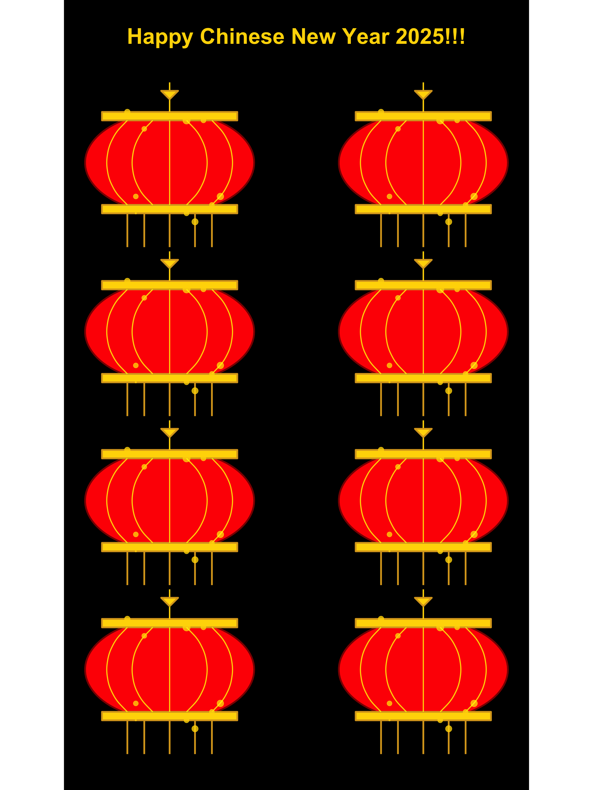

Happy Chinese New Year 2025 🎉🧧
Health Data Science
Data Visualisation
R
Weisi reflects on the sight of red lanterns strung along the streetlights on her way to Hangzhou Xiaoshan International Airport
Weisi completed the Master of Science in Health Data Science in 2023 and has since been working as a data scientists at the School of Population Health, UNSW.
On my way to Hangzhou Xiaoshan International Airport for my return to Sydney, the streets were beautifully adorned with red lanterns 🏮 hanging from the streetlights. Inspired by this enchanting sight, I created the figure below in R during the trip (with help from ChatGPT—and a lot of iterations 😁). It definitely helped pass the time while I was waiting (endlessly) at the airport and enduring nearly 10 hours on the plane!!!
Wishing everyone a Happy Chinese New Year of the Snake 🐍 2025!🧨🎇🎉🧧
Source code for creating the above figure:
library(ggplot2)
library(dplyr)
library(tibble)Step 1: Create a red lantern by coding all the components that make up the lantern.
lantern_body <- tibble(
x = cos(seq(0, 2 * pi, length.out = 100)),
y = sin(seq(0, 2 * pi, length.out = 100)) * 0.6 # Oval shape
)
# Decorative gold band at the top and bottom
gold_band_top <- tibble(
x = c(-0.8, 0.8, 0.8, -0.8),
y = c(0.6, 0.6, 0.5, 0.5)
)
gold_band_bottom <- tibble(
x = c(-0.8, 0.8, 0.8, -0.8),
y = c(-0.5, -0.5, -0.6, -0.6)
)
# Tassels at the bottom
tassels <- tibble(
x = c(-0.5, -0.3, 0, 0.3, 0.5),
xend = c(-0.5, -0.3, 0, 0.3, 0.5),
y = rep(-0.6, 5),
yend = rep(-1.0, 5)
)
# Hanging string at the top
hanging_string <- tibble(
x = c(0, 0),
y = c(0.6, 0.75) # Longer hanging string for traditional look
)
# Chinese knot at the top
chinese_knot <- tibble(
x = c(0, 0.1, -0.1, 0),
y = c(0.75, 0.85, 0.85, 0.75)
)
# Star-like lights (small golden stars on the lantern)
stars <- tibble(
x = c(0.2, -0.5, 0.6, -0.4, 0.3),
y = c(0.5, 0.6, -0.4, -0.6, -0.7),
size = c(2, 1.5, 1.8, 1, 1.7)
)
# Additional decorative curved lines on the lantern body
curved_lines <- tibble(
x = c(0, 0.5, 1, 0.5, 0),
y = c(0.3, 0.5, 0.3, -0.5, -0.7)
)
# More golden dots along the body of the lantern
dots <- tibble(
x = c(-0.3, 0.4, -0.4, 0.5, 0.2),
y = c(0.4, 0.5, -0.4, -0.5, -0.6)
)
# Adding vertical semi-circle curved lines
semi_circles_vertical <- tibble(
x = c(-0.6, -0.4, 0, 0.4, 0.7), # X positions for vertical curves
y_start = rep(0.5, 5), # Start at the top of the lantern
y_end = rep(-0.5, 5), # End at the bottom of the lantern
curvature = c(-0.5, 0.5, -0.5, 0.5, -0.5) # Same curvature for a semi-circle effect
)Step 2: Create a function to arrange the positions (x and y) of multiple lanterns within a single figure.
create_lantern_layers <- function(offset_x = 0, offset_y = 0) {
list(
# Lantern body
geom_polygon(
data = lantern_body %>% mutate(x = x + offset_x, y = y + offset_y),
aes(x = x, y = y),
fill = "red", color = "darkred", linewidth = 1.5
),
# Gold band at the top
geom_polygon(
data = gold_band_top %>% mutate(x = x + offset_x, y = y + offset_y),
aes(x = x, y = y),
fill = "gold", color = "goldenrod", linewidth = 1.5
),
# Gold band at the bottom
geom_polygon(
data = gold_band_bottom %>% mutate(x = x + offset_x, y = y + offset_y),
aes(x = x, y = y),
fill = "gold", color = "goldenrod", linewidth = 1.5
),
# Tassels at the bottom
geom_segment(
data = tassels %>% mutate(x = x + offset_x, xend = xend + offset_x, y = y + offset_y, yend = yend + offset_y),
aes(x = x, y = y, xend = xend, yend = yend),
color = "goldenrod", linewidth = 1.5
),
# Hanging string
geom_segment(
data = hanging_string %>% mutate(x = x + offset_x, y = y + offset_y),
aes(x = x, y = y, xend = x, yend = y + 0.2),
color = "gold", linewidth = 1.2
),
# Chinese knot at the top
geom_polygon(
data = chinese_knot %>% mutate(x = x + offset_x, y = y + offset_y),
aes(x = x, y = y),
fill = "gold", color = "goldenrod", linewidth = 1.5
),
# Tiny stars/lights around the lantern
geom_point(
data = stars %>% mutate(x = x + offset_x, y = y + offset_y),
aes(x = x, y = y, size = size),
color = "gold", alpha = 0.8,
show.legend = FALSE
),
# Add vertical semi-circle curved lines on the lantern body
geom_curve(
aes(x = offset_x - 0.5, y = offset_y + 0.5, xend = offset_x - 0.5, yend = offset_y - 0.5),
curvature = 0.5, color = "yellow", linewidth = 1, alpha = 0.8
),
geom_curve(
aes(x = offset_x - 0.2, y = offset_y + 0.5, xend = offset_x - 0.2, yend = offset_y - 0.5),
curvature = 0.5, color = "yellow", linewidth = 1, alpha = 0.8
),
geom_curve(
aes(x = offset_x, y = offset_y + 0.5, xend = offset_x, yend = offset_y - 0.5),
curvature = 0, color = "yellow", linewidth = 1, alpha = 0.8
),
geom_curve(
aes(x = offset_x + 0.2, y = offset_y + 0.5, xend = offset_x + 0.2, yend = offset_y - 0.5),
curvature = -0.5, color = "yellow", linewidth = 1, alpha = 0.8
),
geom_curve(
aes(x = offset_x + 0.5, y = offset_y + 0.5, xend = offset_x + 0.5, yend = offset_y - 0.5),
curvature = -0.5, color = "yellow", linewidth = 1, alpha = 0.8
),
# Dots along the lantern body
geom_point(
data = dots %>% mutate(x = x + offset_x, y = y + offset_y),
aes(x = x, y = y),
color = "gold", size = 4, alpha = 0.8
)
)
}Step 3: Combine all lanterns into a single plot.
lanterns_plot <- ggplot() +
# Add eight lanterns with different offsets
create_lantern_layers(-1.5, 1) +
create_lantern_layers(1.5, 1) +
create_lantern_layers(-1.5, -1) +
create_lantern_layers(1.5, -1) +
create_lantern_layers(-1.5, -3) +
create_lantern_layers(1.5, -3) +
create_lantern_layers(-1.5, -5) +
create_lantern_layers(1.5, -5) +
# Fixed axis and black background
coord_fixed() +
theme_void() +
theme(panel.background = element_rect(fill = "black")) +
# Add the "Happy Chinese New Year!" message at the top
annotate("text", x = 0, y = 2.5, label = "Happy Chinese New Year 2025!!!", size = 14, color = "gold", fontface = "bold", hjust = 0.5)